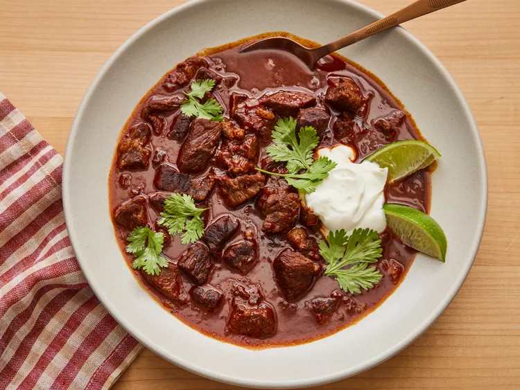

Texas Chilli

Description
This Texas chili is rich and hearty with just the right amount of heat. The beef is wonderfully tender and
perfectly absorbs the smoky, savory seasoning of the pepper paste and spices.
Ingredients
- Dried chilli peppers
- Hot water
- Finely chopped chipotle pepper in adobo sauce
- Canola oil
- Boneless beef chuck roast
- Kosher salt
- Freshly ground black pepper
- Cinnamon
- Cumin
- Garlic
- Yellow oniond>
- Masa harina
- Beef stock
- White vinegar
- Lime, cut into wedges for serving
How to make
- Step 1:Gather all ingredients
- Step 2Place peppers in a large skillet and heat over medium-low heat; cook, turning once, until
lightly toasted and fragrant, 2 to 3 minutes per side. Transfer chiles to a bowl and cover with hot water; let
stand for 30 minutes.
- Step 3Drain chiles, reserving about 1/2 cup of the soaking water. Use a paring knife to slice
open each pepper, and remove and discard stems and seeds by running under a gentle stream of tap water.
- Step 4Combine chiles, chipotle pepper, and reserved 1/2 cup water in a blender; blend until a
smooth paste forms, 15 to 30 seconds. Set aside.
- Step 5Heat oil in a Dutch oven over medium-high heat. Toss beef cubes in a large bowl with salt
and pepper until evenly coated. Add half of the beef to the Dutch oven and cook, stirring occasionally to brown
most sides, about 3 minutes per side. Transfer to a large plate. Repeat with remaining beef.
- Step 6Add onions and garlic to drippings in Dutch oven and cook, stirring constantly, until
soft and translucent, 3 to 4 minutes. Add cumin and cinnamon, and cook, stirring constantly, until darkened and
fragrant, about 1 minute.
- Step 7Add blended chili paste and cook, stirring constantly, for 1 minute.
- Step 8Add 1/4 cup of the water and masa harina, whisking until incorporated to avoid lumps. Add
stock and remaining 1 1/4 cups water and stir to combine.
- Step 9Add bay leaves and reserved beef and bring to a simmer over medium-high. Reduce heat to
maintain a very low simmer and cook, partially covered, stirring occasionally, until liquid is thickened, about 2
hours. Stir in brown sugar and vinegar.
- Step 10Remove from heat and let stand for 20 minutes before serving warm with sour cream and
lime wedges.